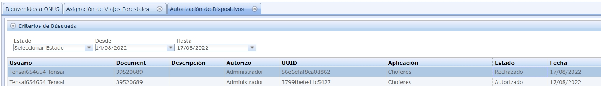

Asignación de viajes
En el panel de gestión de viajes forestales - > Asignación de viajes

A la derecha se abrirá una grilla con los viajes disponibles. Éstos viajes tienen 3 estados diferentes pendiente, asignado y cerrado.

Los viajes pendientes son los que no han sido asignados, al asignar un chofer, un monte y un camión a un viaje, éste cambiará de estado a asignado. Para asignar el viaje, se le da click derecho al viaje y se abrirá un menú con diferentes opciones:
Se da click en Modificar asignación y se abrirá el siguiente formulario:

Los campos que debe modificar para hacer la asignación son: “Monte, Camión y chofer”. Al darle click a cada uno de los campos, se abrirá las opciones disponibles:
Al darle en el botón aceptar el viaje se mostrará como “asignado”:
Una vez el chofer complete el viaje en la aplicación, el viaje cambiará de estado automáticamente a Cerrado.
Asignación de viajes de celulosa
En el panel de gestión de viajes forestales - > Asignación de viajes
A la derecha se abrirá una grilla con los viajes disponibles. Éstos viajes tienen 3 estados diferentes pendiente, asignado y cerrado.
Se da click en cualquier parte de la grilla y click en Nueva asignación asignación y se abrirá el siguiente formulario:
Se deberá llenar todos los campos obligatorios:
-Hora de asignación.
-Monte.
-Camión.
-Remolque.
-Chofer 1.
-Empresa.
Al darle en el botón aceptar el viaje se mostrará como “asignado”:
Una vez el chofer complete el viaje en la aplicación, el viaje cambiará de estado automáticamente a Cerrado.
Tenga en cuenta que los viajes a celulosa sólo serán tomados por la app si son a un monte
válido para celulosa.
(Que el tipo de producto del monte tenga "celulosa" en la descripción)
Asociar Viajes
Al igual que la asignación, asociar un viaje se hace desde el panel de Gestión de viajes forestales -> Asignación de viajes:
Para asociar el viaje, presiona click derecho sobre un viaje y se abrirá el menú:
presiona click en Asociar a viaje App se abrirá el siguiente menú:
Se puede ver que hay dos maneras en la que se puede asociar, la primera es asociar el viaje normalmente y la segunda es asociar el viaje como retorno. Tenga en cuenta que sólo puede seleccionar una de las dos opciones. El Nro.Viaje es el número del viaje principal que está en curso. Al hacer click sobre el campo Nro.Viaje, se mostrará el viaje principal disponible para el viaje que desea asociar. Finalmente marque la casilla Notificar para que le llegue al chofer una notificación en la app para aceptar el viaje asociado y presione click sobre Aceptar. Al igual que con una asignación, al asociar un viaje, el estado de éste cambiará a asignado.
Sincronizar datos con Onus
Para sincronizar la información de la App con el sistema Onus, abre la sección Api -> Turnos y viajes
Se abrirá la siguiente grilla con el listado de turnos:
Al presionar doble click en el turno, se abrirá otra grilla con los viajes que se realizaron en el turno y su respectiva información.
A la izquierda de la parte inferior se puede observar un botón que dice Sincronizar datos con Onus Al presionarlo, los datos de los viajes quedarán sincronizados con el sistema Onus.
Autorizar turnos
Desde el panel de Onus en la sección: Api -> Autorización de turnos:

Se abrirá una grilla con los usuarios (choferes) que estén pidiendo la autorización.
Al presionar click derecho sobre el usuario se abrirá el siguiente menú:
Finalmente presiona sobre Autorizar o Denegar según sea el caso y da click en Aceptar.
Autorizar Dispositivos
Desde el panel de Onus, en la sección Seguridad -> Autorizar dispositivo:
Se abrirá una grilla donde estará la información de los usuarios (dueño del dispositivo) y el estado:

Para autorizar, se da click derecho sobre el usuario y se abrirá un menú con dos opciones:
Autorizar - Denegar o Actualizar lista
Al presionar click sobre Autorizar-Denegar se abrirá un menú donde se podrá autorizar o
denegar el dispositivo:
Finalmente se presionar en Aceptar y el dispositivo tendrá autorización.